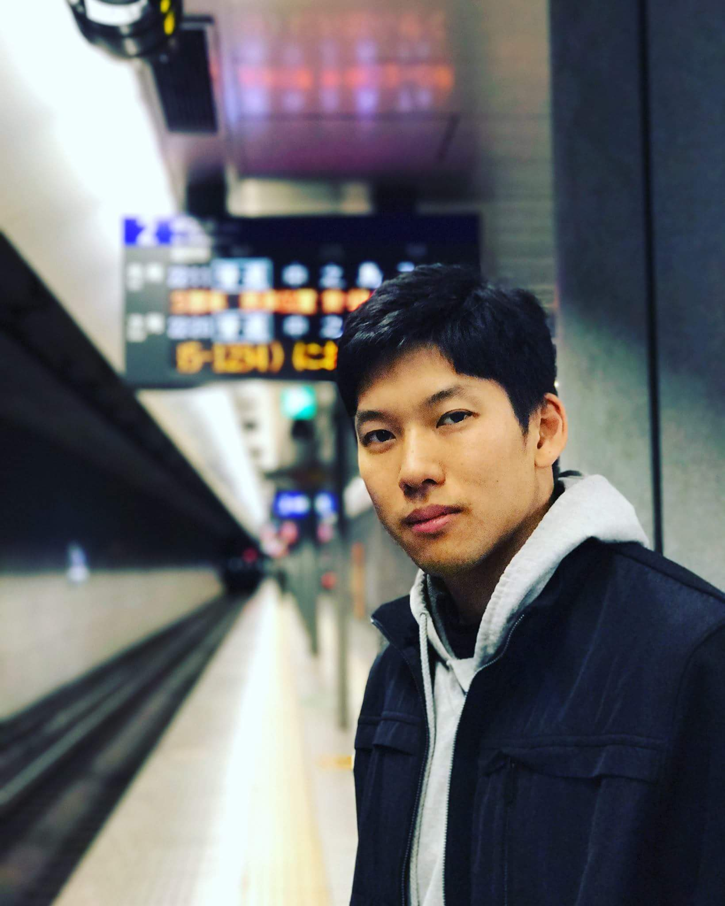

About Me

Hello, my name is Yuta Tamura. Colorado born, dance-driven technology enthusiast. I am a Full Stack Web Developer focused on writing clean,efficient, and beautiful code. I have a passion for developing user-friendly and functional applications. My professional path initially began as a chemical engineer at a large PVC manufacturing plant, but my love for technology and computers finally won out my desire to pursue truly meaningful work that has the potential to make a real difference in the world. I thrive in detail-oriented problem solving environments and never cease to engage my passion in helping others and solving complex problems.
Create daily.
With my free time, I enjoy an array of hobbies from competitive break dancing, Brazilian Jiu Jitsu, yoga, and pretty much any outdoor activities. Feel free to take a look at my most recent projects, or just say hello!
Connect with Me